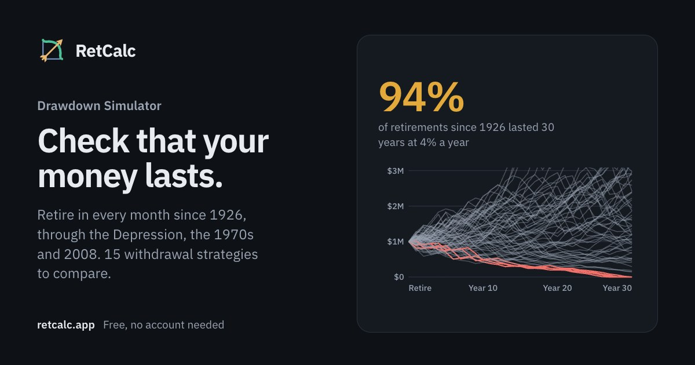
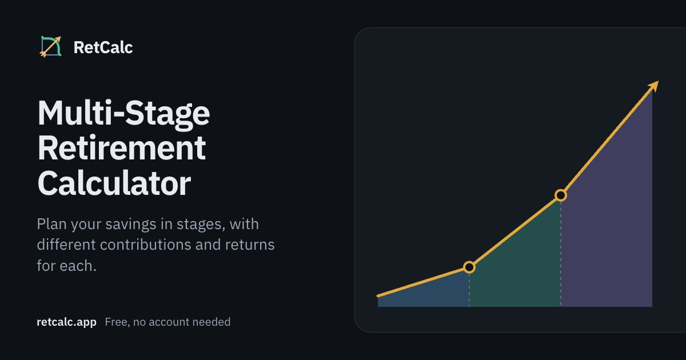
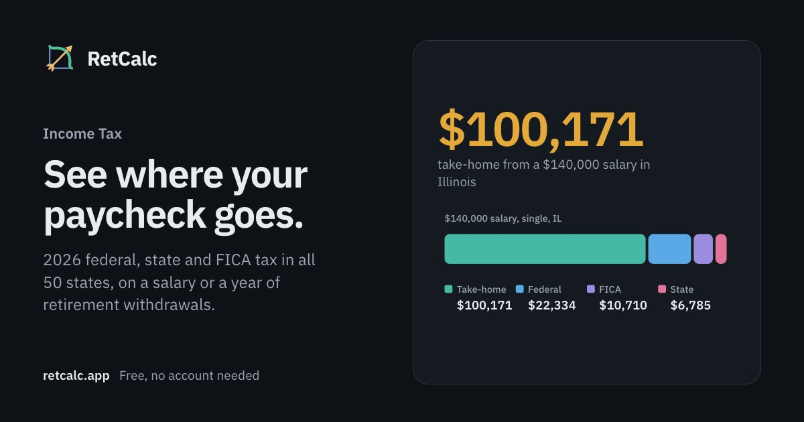
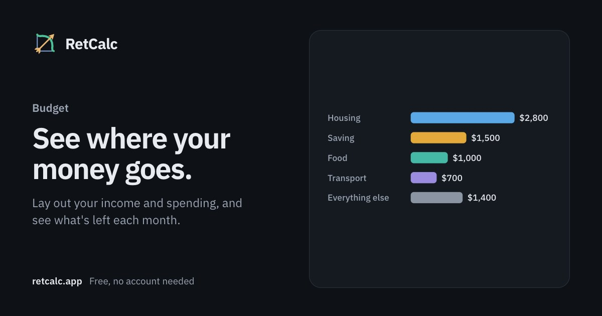
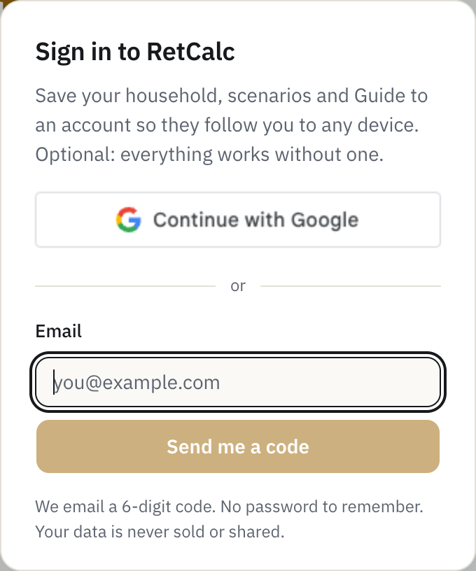

Pages are prerendered and served from a CDN. Every number on them is worked out on the visitor's own machine, by a calculation engine that runs off the main thread. Accounts, when someone wants one, only hold their saved inputs.
| Layer | What it uses |
|---|---|
| Framework | Next.js 16 (App Router), React 19, TypeScript 5 |
| Look | Tailwind CSS v4 and shadcn/ui on Base UI primitives, Lucide icons; IBM Plex Sans, served by the site itself |
| Engine | Plain JavaScript, type-checked through JSDoc, behind typed TypeScript bridges |
| Checks | ESLint with zero warnings allowed, tsc, @shadcn/lint, a calculation suite, unit and end-to-end tests |
| Design | A written design system: Graphite (dark, the default) and Paper (light) themes, one amber accent, gain and loss colors, five chart hues |
The design rules are enforced, not just written: the linter rejects raw colors, one-off sizes and inline styles, and a new look has to be a component variant.
One engine serves every page: projections, Monte Carlo, federal and state income tax, FICA, Social Security, RMDs, Roth conversions, ACA subsidies, Medicare and IRMAA, mortgages, debt, rent against buy, college, FIRE, the 72(t) bridge and historical withdrawal backtests.
| Historical replay | Every starting month (or January) since 1926, run forward through what actually happened. The Drawdown Simulator's 30-year test has 835 of them. |
| Monte Carlo, calculators | 5,000 lognormal runs per redraw, set so the average matches the rate entered: with zero volatility it draws the plain projection exactly. |
| Monte Carlo, drawdown | A block bootstrap of real history from 1927. Whole runs of consecutive years are drawn together, so the 1930s and 1970s keep their streaks. |
Every simulation shares one seeded random number generator (mulberry32), so a chart doesn't jump when an unrelated input changes. A Re-roll button moves the seed for all of them at once.
A build step bundles the engine, its data and the Guide's planning jobs into one Web Worker, so a 300,000-retirement Optimizer run doesn't freeze the page.
RetCalc runs on Vercel and deploys from the main branch. Pages are prerendered when the site is built, the homepage's and tool list's own figures included, so a visit is a handful of static files and a JavaScript engine that does the rest.
| Piece | How it is done |
|---|---|
| Hosting | Vercel. Production builds from main; every branch gets its own preview. Before 5 October 2026 the site was a hand-built static site; it now lives on in a private archive for comparison. |
| Rendering | Prerendered pages and articles. There are no API routes: all calculation happens in the browser, and the one thing the site's own server receives is error reports, stripped of inputs, which it passes on to Sentry. |
| Domain | retcalc.app, with DNS on Cloudflare; www redirects to the bare domain. |
| Analytics | Cloudflare and Vercel Web Analytics: cookieless page counts, production only. No ads and no ad trackers. |
| Sign-in codes go out through Resend from the site's own domain. Mail to contact@retcalc.app is forwarded separately. | |
| Installable | A web app manifest and icons, so it can be added to a phone's home screen, with a bottom tab bar there. |




Each page has its own 1200×630 card: a title, a line of text and one of about 21 illustration types. A development-only page draws them and a headless browser saves them as static images, so sharing a link to any tool shows that tool.
Everything works without signing in. A signed-in visitor gets the same site, with their household, saved scenarios and Guide kept in step across devices. Saving never waits on the network, and a sync never throws anything away.

No password to remember: a code by email, or Google. The dialog says up front that an account is optional and that data is never sold or shared.
The privacy page names every service that touches data (Supabase, Google, Resend, Vercel, Cloudflare and Sentry) and what each one sees. A dedicated test script checks the row-level security rules.
Tax rules, Medicare and ACA prices, market history and sensible defaults all go stale. Each one is tracked in a list with its source, how often it changes, when it was last updated and when it is next due. Anything coming due is flagged at the start of every working session.
| Figure | Source | How often |
|---|---|---|
| Taxes | ||
| Federal brackets, deductions | IRS Revenue Procedure (2025-32 for 2026) | Yearly |
| Contribution limits | IRS notices, incl. HSA limits | Yearly |
| Social Security figures | SSA's October fact sheet | Yearly |
| State income tax, 50 + DC | Tax Foundation's January survey, state revenue departments | Yearly |
| State retirement rules | State revenue departments, checked against Tax Foundation and AARP | Yearly |
| RMD tables | IRS Publication 590-B | Yearly check |
| Healthcare | ||
| Medicare Part B, IRMAA | CMS fact sheet | Yearly |
| Part D, Medigap | CMS; KFF and insurer surveys | Yearly |
| ACA premiums, subsidies | KFF benchmark premiums, HHS poverty guidelines, IRS percentages | Yearly |
| Markets | ||
| Stocks, bonds, inflation | Robert Shiller's data (Yale) via multpl; BLS CPI-U | Yearly |
| T-bills, small-cap value | Kenneth French Data Library (Dartmouth) | Yearly |
| Today's CAPE | multpl.com, Shiller PE | Monthly |
| Housing and other defaults | ||
| Mortgage rate | Freddie Mac weekly survey | Quarterly |
| Home price and rent | NAR and Census, Zillow, Tax Foundation | Yearly |
| College and child costs | College Board; USDA, CPI-adjusted; Dept. of Labor childcare data | Yearly |
| 72(t) rate, debt rates | IRS federal rates; Federal Reserve G.19 | Quarterly, yearly |